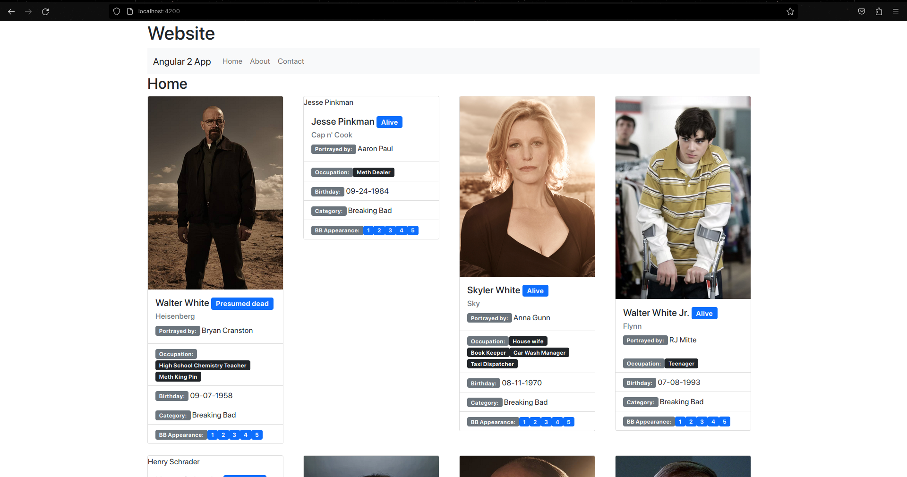
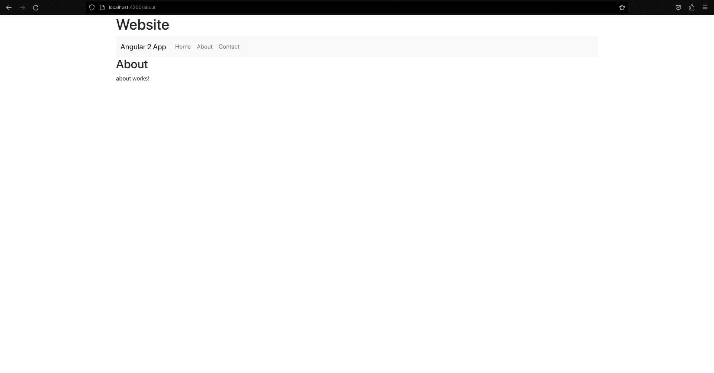
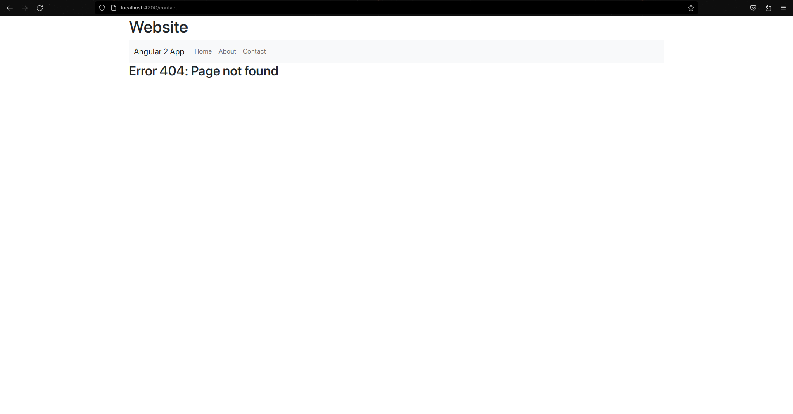

Angular
How it works
Angular is a TypeScript based framework from Google, it is based off of their older JavaScript based AngularJS framework.
Angular uses Typescript to create modules and components. The base app module is a container for all the other modules and components. The app module is then bootstrapped (loaded and initialized) to the index.html, which is the entry point for the app. The app module contains references to the components it uses in the declarations array. The components are then referenced in the app module's template HTML file to demonstrate how the component should be displayed in the app. Those components then have their own HTML template files, which are referenced in the component's typescript file. The component's typescript file contains the logic for the component, which can also include variables and a stylesheet.
Figure 2
Angular Logo

(Angular, n.d.).
Strengths and Weaknesses
Strengths
-
The component TypeScript files are easy to understand and aren't filled with confusing terms.
-
The CLI has built-in generation for components and modules.
-
The concept of modules and components is very modular and allows for parts of the app to be broken down into smaller functions, which can simplify the code and make it easier to understand.
-
Built by Google, so good documentation and support is available.
Weaknesses
-
Steep learning curve due to being complex. It took me a while to understand the concepts.
-
If you don't generate components through the CLI, you have to manually add them to the app module, which can be tedious.
-
Each component is divided into 4 files, which can be confusing to keep track of.
Example Web App
I found this framework to be difficult to get started with, but after watching some YouTube tutorials, I had an understanding of the concepts and I could see the benefits of using it.
For this framework, I made a simple site with a home page, an about page and a link to a contact page to demonstrate how I handled an error 404. The site was styled using very minimal Bootstrap. There is a navigation bar at the top which is a component, saving me from creating it on every page. The home page contained a grid of cards that were generated from a JSON file I found online containing Breaking Bad and Better Call Saul characters. The about page just had the default pre-generated text. The contact page didn't exist so it displayed the page not found page I made.
Here's how I used Angular *ngFor and *ngIf statements to generate the cards from the JSON:
Gallery
The Home Page
The Contact Page
The Error 404 Page
